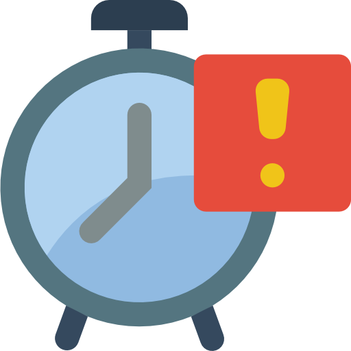

Mentor your students
As a professor, you have a lot of hard-working students to guide. They all have multiple projects, and it's tough to keep track of them all. BetterProfessor helps you track students and their projects so they can get better results.

Send automated emails to students
Your students don't always need intense guidance. Sometimes, a well-timed email is enough. Set up automated emails to remind your students to update you on their progress, about upcoming deadlines, or simply to make sure they're working hard.

Professor reminders
Students might need occasional help, but the stereotype is still "The Absent-Minded Professor!" Remind yourself about the projects your students are working on with automated alerts, so you don't have to keep all that information in your head.